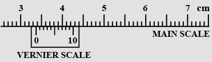
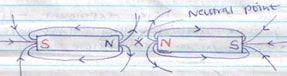

Given
that the mass of the solid is 567g determine the density of the solid
in Kg/m3.
(Give your answer correct to 2 d.p) (3 mks)
.
Given
that the diameter of the wheel is 0.6m, determine the moment to the
couple (3 mks)
..
How
far from the pivot will the 65kg mass be for the beam to be in
equilibrium (3 mks)
c) A
uniform metre rule of weight 100N is suspended horizontally by two
vertical springs P and Q placed 20cm and 30cm from its ends
respectively. Calculate the force (tension) in each string
Mass
of density bottle with some soil = 67. 2g
B..
C..
D..
SECTION
A

Check
for correct drawing
Main
scale 3.3 √
Vernier
scale 0.06 √
- Volume
of water displaced = 100 – 60 = 40cm3
Volume
of water displaced = Vol. of stone = 40cm
3
√
- Volume
of drop = 5 x 10-8
M3
- Area
of circular film = 0.1M2
V
= A x H
Check
for correct units.
- Atoms
are spherical √
Mass
uniformly distributes √
- Weight
on Earth = 600N
Weight
on Planet = 450N
Weight,
W = Mg
Correct
substitution √
Correct
answer with correct units √
- The
force of cohesion within the mercury is greater than the force of
adhesion between mercury and glass √. The mercury therefore
sinks down √the tube to enable mercury molecules to keep
together√.
- Temperature
rise and impurities lower the surface tension of water √
- a)
Check
for correct drawing √
Check
on the curvature √
b)
The unbalanced √ surface tension√ pulls the thread tight
- h
= 760mm
p
= 1.36 x 10
4
Kg/m
3
p
= ?
p
= pgh
Check
on the conversion √
Correct
substitution √
P
= 103,360 N/M2
Accept
P = 103,360 pa √ check for correct units
- The
external pressure (atmospheric) is lower than the internal pressure
√: therefore the capillaries break √.
- The
bottle with hole experiment – if diagram used; check for
labeling√: Procedure, observation and conclusion√.
√
Lowest
jet has highest pressure
Liquid
- Solid
– particles very close, hence low kinetic energy√.
Liquids
– particles fairly free, moderate kinetic energy √
Gases
– particles very free, high kinetic energy √
- The
metal blade conducts heat from the hand but the wood cannot √
90° - 48° = 42°
- (20
x 0.3) + (20 x 0.3) √ or 20 x 0.6
6
+ 6 = 12NM√
Check
for correct units
- Unlike
poles attract while like poles repel√
Reject
– unlike charges attract while like charges attract
Reject
– unlike terms attract while like terms attract
- 
Check
for direction of field √
Check
for presence of the neutral zone√
- This
is due to the influence of the Earth’s magnetic field√
- Repulsion
only occurs between 2 like poles√ but attraction may occur
between 2 unlike poles or between a magnet and a magnetic materials√
SECTION
B
- i.
Iron is a soft magnetic material it can easily acquire magnetism and
can easily lose magnetism.
- Check
for correct direction (current flows from A to B)
A → B
- A
– North pole√
B
– South pole √
- Right
hard grip rule√
It
states that if a coil carrying current is grasped in the right hand
such that the fingers point in the direction of current then the
thumb points in the direction of North Pole√.
- It
would cause overheating on the electromagnet√. This adversely
affects the magnetism of the electromagnet√.
- i.
Smoke particles – smoke particles are larger than air
molecules and light enough to move when bombarded by air molecules √
Lens
– focuses the light from the lamp on the smoke particles,
causing them to be observable
Microscope
– enlarges/magnifies the smoke particles so that they are
visible √
- Smoke
particles more randomly/zigzag √
Air
molecules bombard the smoke particles
Air
molecules are in random motion
- The
speed of motion of smoke particles will be observed to be
lighter/faster/speed increases√.
- a)
Principle of moments states that for a system in equillbrium, the
sum of clockwise moments must be equal to the sum of the
anticlockwise moments.
b)
Clockwise moments = Anticlockwise moments
300 x 1.5 = X x 650?
(correct substitution 1mk)
?
X = 0.69M?
c)
Taking
moments about P
Distance
between P and Q = 100 – (20 + 30)
=
100 – 50√
=
50cm
=
0.5m
F2
x 0.5 = 0.3 x 100√
Clockwise
moments = Anticlockwise moments
F1
+ F2 = 100N√
F1
+ 60N = 100N
F1
= 100N – 60N
F1
= 40N√
- a)
Mass of water = 66.1 – 42.9√
=
23.2g√
=
23.2cm3√
Working
must be shown
- Volume
of density bottle = volume of water
Volume
of bottle = 23.2cm
3√
- Mass
of soil = 67.2 – 42.9
=
24.3g √
- Mass
of water that filled the space above the soil
=
82.0 – 67.2
=
14.8g √
- Volume
of soil
Volume
of water √
=
14.8cm3√
Volume
of soil = 23.2 – 14.8
=
8.4cm3√
- The
density of the soil
√
=
2.893g/cm3√
- a)
A – Seal and insulator√
B
– Zinc case√
C
– Mixture of carbon and manganese (IV) oxide√
D
– Carrbon rod √
- Zinc
case acts as a negative electrode√
- i)
Polarisation√
Remedy
– Adding a depolarizer e.g potassium dichromate√
ii)
Local action√
Remedy
– By amalgamation√
Accept
– use of pure zinc or coating zinc with mercury √